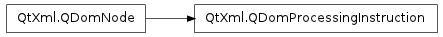

QDomProcessingInstruction ¶

Detailed Description ¶
The PySide.QtXml.QDomProcessingInstruction class represents an XML processing instruction.
Processing instructions are used in XML to keep processor-specific information in the text of the document.
The XML declaration that appears at the top of an XML document, typically <?xml version='1.0' encoding='UTF-8'?> , is treated by QDom as a processing instruction. This is unfortunate, since the XML declaration is not a processing instruction; among other differences, it cannot be inserted into a document anywhere but on the first line.
Do not use this function to create an xml declaration, since although it has the same syntax as a processing instruction, it isn’t, and might not be treated by QDom as such.
The content of the processing instruction is retrieved with PySide.QtXml.QDomProcessingInstruction.data() and set with PySide.QtXml.QDomProcessingInstruction.setData() . The processing instruction’s target is retrieved with PySide.QtXml.QDomProcessingInstruction.target() .
For further information about the Document Object Model see Level 1 and Level 2 Core. For a more general introduction of the DOM implementation see the PySide.QtXml.QDomDocument documentation.
- class PySide.QtXml. QDomProcessingInstruction ¶
- class PySide.QtXml. QDomProcessingInstruction ( x )
-
Parameters: x – PySide.QtXml.QDomProcessingInstruction Constructs an empty processing instruction. Use QDomDocument.createProcessingInstruction() to create a processing instruction with content.
Constructs a copy of x .
The data of the copy is shared (shallow copy): modifying one node will also change the other. If you want to make a deep copy, use PySide.QtXml.QDomNode.cloneNode() .
- PySide.QtXml.QDomProcessingInstruction. data ( ) ¶
-
Return type: unicode Returns the content of this processing instruction.
- PySide.QtXml.QDomProcessingInstruction. setData ( d ) ¶
-
Parameters: d – unicode Sets the data contained in the processing instruction to d .
- PySide.QtXml.QDomProcessingInstruction. target ( ) ¶
-
Return type: unicode Returns the target of this processing instruction.